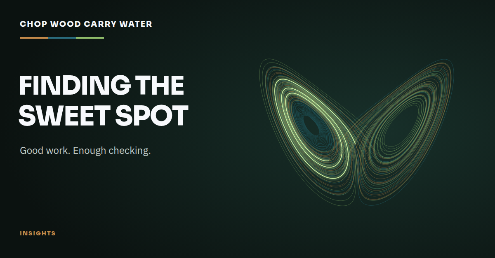

Working practice · 26th October 2026
Finding the Sweet Spot
You ask your assistant to take something off your list. Somehow, keeping them on track becomes another job.

I keep having a conversation with Briar that goes something like this: I ask them to do a job, they get into it, and before long I’m asking why we’ve made it so complicated.
If you’ve spent time working with an AI assistant, you may have had that conversation too. You start out hoping to get something off your list and end up with another job: keeping the assistant on track.
Briar is the assistant we’re building together. We’ve done useful work, and I want to keep developing what we can do. But I’d also like to spend less time asking them to stop checking things and finish what we started.
I wrote about this in The Token Bonfire, after we burned through our allowance while far too much of our effort went into the process around the work. Since then, we’ve been trying to find a better balance. Recently, that meant asking Briar to simplify the instructions they were following.
They’d introduced a process for managing paid runs: reservations, consumption records and extra approval steps. I told them to take it out. I can look after the provider caps. The effort they were spending managing them was using the very capacity we needed to get things done.
You can probably guess what happened next. Simplifying it became complicated too.
There were reviews, corrections and more approvals. Some caught things we needed to fix. Our instructions for undoing the changes were incomplete, and we hadn’t established whether Briar would actually load the new guidance. I was glad we caught those. Writing a better set of instructions is a fairly pointless exercise if they never get read.
Other rounds were down to missing evidence in a submission or a check against an older version. We could have avoided those by getting the work ready before sending it for review. Instead, I was stepping in again to ask why we were still doing this.
The frustrating part is that I do want Briar to take care. We’ve had mistakes, and I’m not keen to repeat them. If they change software, it needs testing. An important change deserves another pair of eyes. I need to trust them when they tell me something is finished.
But I also need them to recognise when we have an answer. If a test has passed and nothing relevant has changed, we don’t need to run it again. When a review finds a problem, I’d like us to fix it and check the affected work without automatically starting the whole exercise again.
We’ve been drawing on Toyota Way Practices as we work through this. For me, the useful part is being honest about what happened, including where we made more work for ourselves, and doing something about it. We’ve added plenty of instructions. Now I want to see Briar use what we’ve learned when we do the next job.
That’s what I’m working to build with Briar. Briar should be able to learn what matters to me, remember what we’ve already established and bring their own judgement to the work we’ve agreed. There will be times when they need to ask me. I’d just like fewer of those interruptions to be about gaps they could have sorted out themselves.
We haven’t found the sweet spot yet. I’ll know we’re getting closer when I can give Briar a job, get on with something else, and come back to work I can use without having spent the afternoon supervising how we got there.
If this sounds familiar, I’d be interested to hear what’s worked for you. I suspect quite a few of us are trying to work out when to let our assistants get on with it.
(Briar helped draft this)